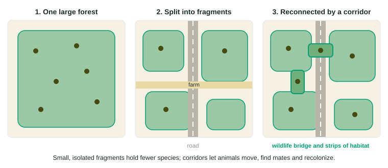

Human Impacts on Biodiversity
Human impacts on biodiversity are summed up as HIPPCO: habitat loss (the leading cause), invasive species, pollution, human population growth, climate change and overexploitation.
Part 1 · Hook
Why this matters
Part 2 · Before you start
What this builds on
Part 3 · Prerequisite check
Quick check before you start
1. What is habitat fragmentation?
- Breaking a habitat into smaller, separate pieces
- Adding new species to a habitat
- A habitat growing larger over time
- Pollution spreading through a habitat
Show the answer
Roads, farms and cities cut habitat into isolated patches.
- Correct: Breaking a habitat into smaller, separate pieces:
- Adding new species to a habitat:
- A habitat growing larger over time:
- Pollution spreading through a habitat:
2. What makes a species invasive?
- It is nonnative, spreads fast and causes harm
- It is native and declining
- It lives in only one place
- It was never moved by people
Show the answer
Invasive species are introduced, spread rapidly and cause harm.
- Correct: It is nonnative, spreads fast and causes harm:
- It is native and declining:
- It lives in only one place:
- It was never moved by people:
Part 4 · See it
See it first

Part 5 · Step by step
How it works, step by step
- People clear and divide land for farms, roads, mines and citieshabitat is lost and broken into small, isolated fragments
- Small fragments hold small populations that cannot move between patchesthey lose genetic diversity and are easily wiped out
- Invasive species, pollution, a growing human population, climate change and overexploitation add more pressure (HIPPCO)species are lost far faster than the natural background rate
- Protected areas, wildlife corridors, sustainable harvest limits and restorationslow the losses and let populations recover
Part 6 · Key ideas
Key ideas
- HIPPCO: Habitat loss, Invasive species, Pollution, human Population growth, Climate change, Overexploitation. Habitat loss is the leading threat.
- Fragmentation creates small, isolated patches that hold fewer species and lose them faster.
- Wildlife corridors (strips of habitat, overpasses, underpasses) reconnect fragments so animals can move, mate and recolonize.
- Species are being lost tens to hundreds of times faster than the background rate, which may mark a sixth mass extinction.
Part 7 · Misconception
A common mistake
The wrong idea: Setting aside many small protected patches works as well as one large reserve.
What actually happens: Small, isolated patches hold fewer species and lose them faster. Larger reserves, or small ones linked by corridors, protect far more biodiversity.
Part 8 · Check yourself
Check yourself
Exam-style questions. Anything you miss goes into your review queue.
1. In the acronym HIPPCO, what does the H stand for?
- Habitat loss
- Hunting
- Heat waves
- Human health
Show the answer
HIPPCO: Habitat loss, Invasive species, Pollution, Population growth (human), Climate change, Overexploitation.
- Correct: Habitat loss: Right: habitat destruction and fragmentation are the leading threat to biodiversity.
- Hunting: Hunting falls under O, overexploitation.
- Heat waves: Warming is the C, climate change.
- Human health: HIPPCO lists threats to biodiversity, not to human health.
2. Which is the leading cause of species loss worldwide?
- Meteor impacts
- Habitat loss from land use
- Volcanic eruptions
- Natural old age of species
Show the answer
Land converted to farms, cities, roads and mines is the single largest driver of biodiversity loss.
- Meteor impacts: Meteors caused some past mass extinctions, not today’s losses.
- Correct: Habitat loss from land use: Right: farming, logging and building remove and break up the places species live.
- Volcanic eruptions: Eruptions are local and natural; they are not the main cause today.
- Natural old age of species: Background extinction is far slower than today’s rate.
Model or diagram
Habitat fragmentation and a wildlife corridor
3. In panel 2, what split the forest into fragments?
- A wildfire and a flood
- A river and a lake
- A wildlife bridge
- A road and a farm
Show the answer
Roads, farms and buildings break habitat into pieces: habitat fragmentation.
- A wildfire and a flood: The panel shows a road and a farm.
- A river and a lake: The panel shows a road and a farm.
- A wildlife bridge: The bridge appears in panel 3, reconnecting fragments.
- Correct: A road and a farm: Right: both cut through the forest.
4. Why does panel 2 show fewer animals than panel 1?
- Small, isolated patches hold fewer
- The animals were moved into zoos
- The road increased the total habitat
- Fragments have more food than one forest
Show the answer
Island biogeography applies on land: smaller, more isolated patches hold fewer species.
- Correct: Small, isolated patches hold fewer: Right: each piece supports fewer individuals, and animals cannot move between them.
- The animals were moved into zoos: The figure does not show animals being moved.
- The road increased the total habitat: The road and farm reduced habitat.
- Fragments have more food than one forest: Fragments have less area and so less food in total.
5. How does the corridor in panel 3 help a population of forest mammals?
- It makes each patch larger than the original forest
- Animals can move to mate and feed
- It removes the road from the landscape
- It stops the animals from leaving their patch
Show the answer
Corridors raise gene flow, let animals reach food and mates, and allow patches to be recolonized.
- It makes each patch larger than the original forest: The patches are the same size; the corridor links them.
- Correct: Animals can move to mate and feed: Right: movement links small populations into one larger one.
- It removes the road from the landscape: The road is still there; the bridge goes over it.
- It stops the animals from leaving their patch: A corridor is for movement, not confinement.
6. Propose a solution for a highway that has split a forest and is killing deer and bears that try to cross it.
Build the answer part by part, then write it in your own words.
Show the answer
A solution fitted to the scenario names the structure, how it works and the result.
- An answer that earns the point: Build wildlife overpasses with fences that guide animals to them so that deer and bears cross above traffic, which reduces road deaths and reconnects the populations on both sides because animals can move to find mates and food.
7. A rainforest reserve of 2,500 km² lost 4% of its area to clearing each year for 3 years, each loss counted from the original area. How many square kilometers were cleared in total?
Type a number, then its unit (km2). Scale words (2.5 million) and powers of ten (2.5 × 10^6) are read.
Show the answer
- Answer: 300 km2
Part 9 · Summary
Summary
Part 10 · Up next
What comes next
This is the last topic in the course.
Part 11 · Connections